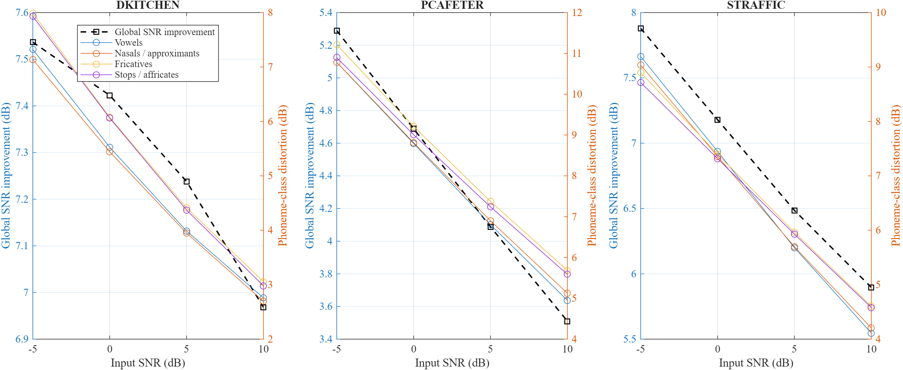
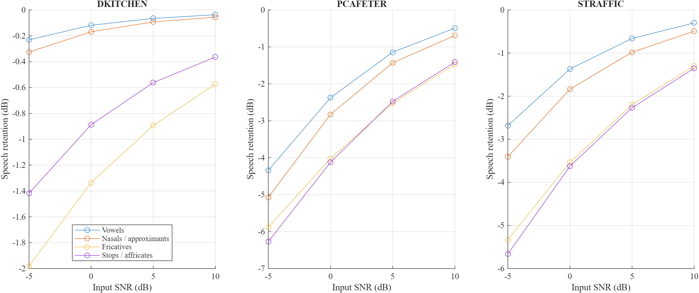
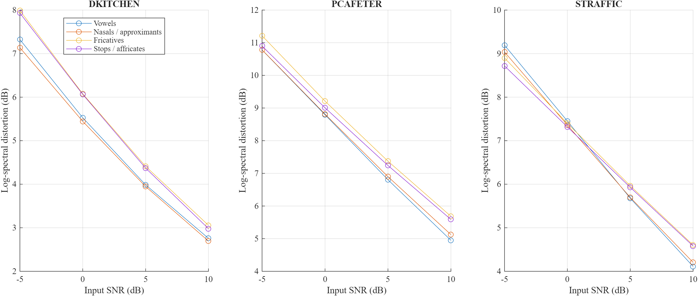

ELEC5305 project progress
Global Noise Reduction versus Phonetic Preservation in Wiener Speech Enhancement
This project examines whether an STFT Wiener filter can improve a whole-utterance noise-reduction score while preserving broad phonetic classes unequally. The MATLAB implementation separates desired-speech attenuation from residual noise and compares global measurements with phoneme-aligned measurements.
Work Completed
The MATLAB program runs the full controlled single-channel speech-enhancement experiment. It constructs noisy mixtures, applies an STFT Wiener filter, reconstructs the output and writes reproducible tables, figures and audio examples.
- STFT analysis and inverse-STFT reconstruction
- Noise-power estimation from a 0.5-second noise-only prefix
- Wiener gain estimation with temporal smoothing and a gain floor
- Separate filtering of known clean-speech and noise components
- Phoneme-to-frame mapping using supplied phone boundaries
The analysis reports whole-utterance SNR and STOI, phonetic-class gain, desired-speech retention, residual-noise energy, log-spectral distortion and segmental SNR. Results are averaged at speaker level before class comparisons.
- Ten English utterances from ten LibriSpeech speakers
- Three DEMAND environmental noise recordings
- Four input SNR levels and two reproducible noise sections
- Vowels, nasals and approximants, fricatives, stops and affricates
- Silence retained as a noise-suppression control
Experiment Setup
Each 16 kHz speech recording is mixed with DKITCHEN, PCAFETER and STRAFFIC noise at -5, 0, 5 and 10 dB input SNR. Two fixed noise sections are used for each speech-noise pair. A 512-sample square-root Hann window, 256-sample hop and 512-point FFT are used. Frames are assigned to the phone containing the frame-centre time.
| Component | Setting | Purpose |
|---|---|---|
| Speech | 10 LibriSpeech utterances | One utterance from each of ten speakers |
| Noise | DKITCHEN, PCAFETER, STRAFFIC | Stationary, public-space and traffic conditions |
| Input SNR | -5, 0, 5 and 10 dB | Tests severe to moderate noise |
| Evaluation | Global and phoneme-aligned measurements | Compares overall improvement with class preservation |
Preliminary Results
Across the 240 mixtures, whole-utterance error SNR improved by 6.18 dB on average. Mean STOI changed from 0.8432 before filtering to 0.8385 after filtering, so the global SNR improvement did not produce an intelligibility improvement. Desired-speech decomposition also showed larger low-SNR energy losses for fricatives and stops or affricates than for vowels and nasals or approximants.



Code, Data and Reproduction
The repository includes the MATLAB implementation, selected speech and noise files,
phone labels, result tables, figures and audio examples. Running main from
the repository folder rebuilds the 240 mixtures and regenerates the results.
main.mDefines the experiment and writes the result files.wienerFilter.mPerforms STFT Wiener filtering and component decomposition.phoneMetrics.mCalculates phoneme-aligned measurements.loadPhoneLabels.mReads and validates the phone boundaries.data/Contains selected speech, noise, labels and manifest files.results/Contains generated CSV tables, figures and WAV examples.
Interpretation and Next Steps
Interpretation
The results support unequal preservation of broad phonetic classes. Global SNR improvement can conceal attenuation of desired speech in specific labelled segments. The class difference cannot be explained by a fixed gain ordering alone.
Next steps
Next, I will check parameter sensitivity, refine the class-level interpretation, complete the written report and prepare the short project demonstration.